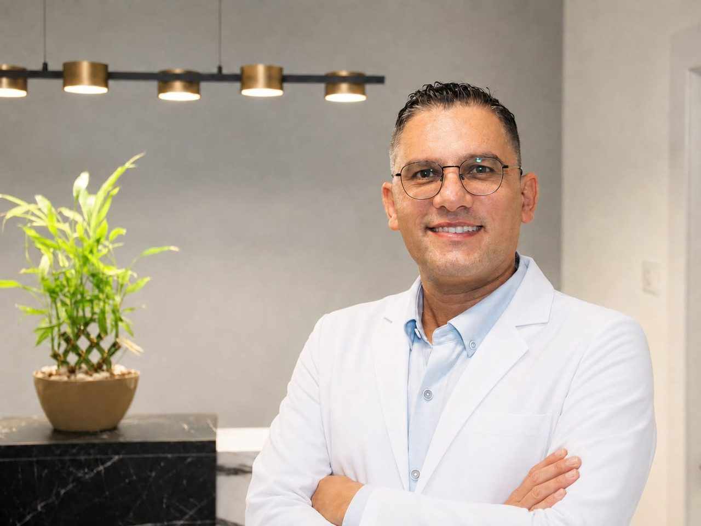

שיקום פה מלא
כשיש כמה בעיות בו-זמנית, לא מטפלים בהן בנפרד — בונים תוכנית אחת שמחזירה תפקוד מלא ומראה טבעי.
ד״ר תחסין יונס, מומחה לשיקום הפה בעל יותר מ־15 שנות ניסיון בטיפול במקרים מורכבים, שתלים, כתרים ואסתטיקה דנטלית.
5.0 מתוך 5 ב־MedReviewsעל סמך 5 חוות דעת · לקריאת חוות הדעת ←
חוות דעת של מטופלים שעברו טיפולי שיקום, שתלים, כתרים וטיפולים אסתטיים אצל ד״ר תחסין יונס.
"מטופלת מזה שנים. כמומחה בשיקום הפה, ליווה אותי בטיפולים – הלבנה, שתלים וטיפולים נוספים."
"טיפול מקצועי, עברתי טיפול של שתלים וכתרים. הכל מצויין ממליצה מאוד."
"רופא מדהים, עשיתי השלמת שן, נראה טבעי, טיפול מקצועי. רופא אכפתי ואנושי. מאוד ממליץ."
כשיש כמה בעיות בו-זמנית, לא מטפלים בהן בנפרד — בונים תוכנית אחת שמחזירה תפקוד מלא ומראה טבעי.
פתרון קבוע במקום שן חסרה, עם תכנון מדויק שמקצר את זמן ההחלמה ומפחית סיכונים.
שיפור המראה בלי שייראה מלאכותי — כל ציפוי מותאם אישית לצורת הפנים והחיוך שלכם.
סריקה דיגיטלית במקום טביעות לא נעימות — התאמה מדויקת יותר, בפחות ביקורים במרפאה.
תוצאות אמיתיות שנוצרו במרפאה — ללא פילטרים, ללא עריכה. כל זוג תמונות שייך לאותו מטופל.


המצב לפני הטיפול: שיניים שחוקות, כתרים ישנים וחוסר אחידות בקו החיוך.
מה בוצע: תכנון דיגיטלי, החלפת כתרים ושיקום מותאם למבנה הפנים.
התוצאה: חיוך טבעי, אחיד ושיפור בתפקוד הלעיסה.


התוצאות משתנות ממטופל למטופל. התאמת הטיפול נקבעת לאחר בדיקה ואבחון אישי.
התמחות רשמית בשיקום הפה בבית החולים הדסה עין כרם, המוכרת על ידי משרד הבריאות.
יותר מ־15 שנות ניסיון בטיפול במקרים הדורשים שילוב של שתלים, כתרים, חניכיים ואסתטיקה.
כל טיפול מתחיל באבחון מלא ובבניית תוכנית מסודרת, ולא בביצוע טיפול נקודתי בלבד.
המטופל מקבל הסבר על האפשרויות, שלבי הטיפול, זמני הטיפול והתחזוקה הנדרשת לאחריו.
הבנת הבעיה, הציפיות והיסטוריית הטיפולים.
צילומים, סריקה דיגיטלית ובדיקת מצב השיניים, החניכיים והסגר.
הצגת החלופות, שלבי הטיפול, משך משוער והמלצות רפואיות.
ביצוע הטיפול בשלבים ומעקב אחר ההחלמה והתוצאה.
מעקב תקופתי והנחיות לשמירה על התוצאה.





לא. תחילה מתבצעת בדיקה מלאה, ורק לאחריה ניתן לקבוע איזה טיפול מתאים.
במקרים מתאימים ניתן להשתמש בתכנון דיגיטלי, בצילומים ובהדמיה כדי לתכנן את הטיפול.
משך הטיפול משתנה בהתאם למורכבות המקרה, מצב החניכיים, הצורך בשתלים וזמן ההחלמה.
הטיפול מותאם למצבו של המטופל ומתבצע תוך שימוש באמצעי אלחוש והפחתת אי־נוחות.
מומלץ להביא צילומים קיימים, רשימת תרופות ומידע על טיפולי שיניים קודמים.
כן. ניתן להגיע לבדיקה ולקבל הסבר מקצועי על מצב הפה ואפשרויות הטיפול.
השאירו פרטים וצוות המרפאה יחזור אליכם לשיחה ראשונית ולתיאום פגישת בדיקה.
השארת פרטים אינה מחייבת התחלת טיפול.